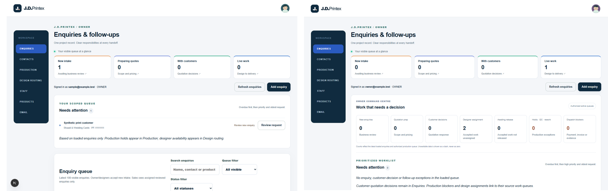
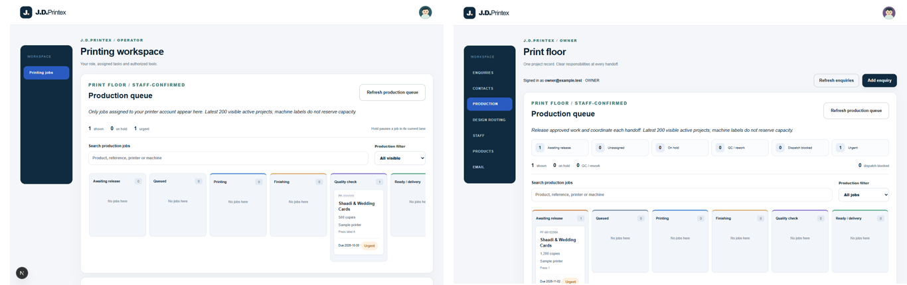
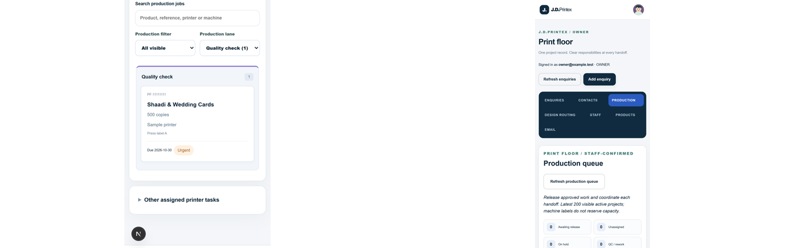
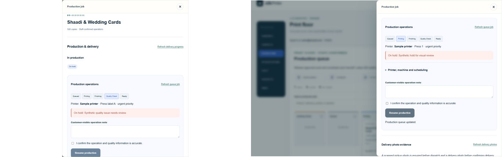

Side-by-side images are derived from actual baseline and Batch 2 browser screenshots. Baseline: Batch 1 package; after: source commit 48ef74a. Desktop widths differ (1366 vs 1440), and fixtures show different records.
Contact sheet of 12 main desktop states



